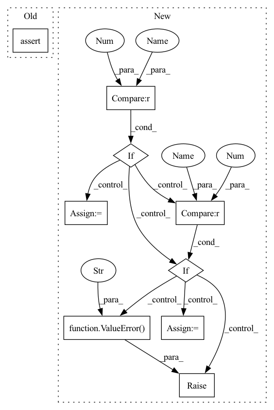

Pattern ID :5614

Before Change
self.out_format = out_format
assert 1 <= self.mfcc_order and self.mfcc_order < n_channel
assert is_in(self.out_format, ["y", "yE", "yc", "y,E", "y,c"])
self.fbank = MelFilterBankAnalysis(
n_channel, fft_length, sample_rate, out_format="y,E", **fbank_kwargs
After Change
assert 1 <= self.mfcc_order and self.mfcc_order < n_channel
if out_format == 0 or out_format == "y":
self.format_func = lambda y, c, E: y
elif out_format == 1 or out_format == "yE":
self.format_func = lambda y, c, E: torch.cat((y, E), dim=-1)
elif out_format == 2 or out_format == "yc":
self.format_func = lambda y, c, E: torch.cat((y, c), dim=-1)
elif out_format == 3 or out_format == "ycE":
self.format_func = lambda y, c, E: torch.cat((y, c, E), dim=-1)
else:
raise ValueError(f"out_format {out_format} is not supported")
self.fbank = MelFilterBankAnalysis(
n_channel, fft_length, sample_rate, out_format="y,E", **fbank_kwargs
)
In pattern: SUPERPATTERN
Frequency: 3
Non-data size: 9
Instances
Fragment ID: 19827359
Project Name: sp-nitech/diffsptk
Commit Name: 33b30598598193c840ee1aac6522adba1b8ff04d
Time: 2022-04-12
Author: takenori.yoshimura24@gmail.com
File Name: diffsptk/core/mfcc.py
M Class Name: MelFrequencyCepstralCoefficientsAnalysis
N Class Name: MelFrequencyCepstralCoefficientsAnalysis
M Method Name: __init__(7)
N Method Name: __init__(7)
M Parent Class: nn.Module
N Parent Class: nn.Module
M File Name: diffsptk/core/mfcc.py
N File Name: diffsptk/core/mfcc.py
M Start Line: 76
M End Line: 79
N Start Line: 77
N End Line: 88
'>
Before Change
assert 0 <= f_min and f_min < f_max
assert f_max <= sample_rate / 2
assert 0 < self.floor
assert is_in(self.out_format, ["y", "E", "yE", "y,E"])
lower_bin_index = max(1, int(f_min / sample_rate * fft_length + 1.5))
upper_bin_index = min(
After Change
assert f_max <= sample_rate / 2
assert 0 < self.floor
if out_format == 0 or out_format == "y":
self.format_func = lambda y, E: y
elif out_format == 1 or out_format == "yE":
self.format_func = lambda y, E: torch.cat((y, E), dim=-1)
elif out_format == 2 or out_format == "y,E":
self.format_func = lambda y, E: (y, E)
else:
raise ValueError(f"out_format {out_format} is not supported")
lower_bin_index = max(1, int(f_min / sample_rate * fft_length + 1.5))
upper_bin_index = min(
fft_length // 2, int(f_max / sample_rate * fft_length + 0.5)
'>
Fragment ID: 19827356
Project Name: sp-nitech/diffsptk
Commit Name: 33b30598598193c840ee1aac6522adba1b8ff04d
Time: 2022-04-12
Author: takenori.yoshimura24@gmail.com
File Name: diffsptk/core/fbank.py
M Class Name: MelFilterBankAnalysis
N Class Name: MelFilterBankAnalysis
M Method Name: __init__(8)
N Method Name: __init__(8)
M Parent Class: nn.Module
N Parent Class: nn.Module
M File Name: diffsptk/core/fbank.py
N File Name: diffsptk/core/fbank.py
M Start Line: 88
M End Line: 88
N Start Line: 88
N End Line: 97
'>
Before Change
scale,
causal
):
assert v.shape[-1] == 64, "value dimension is fixed at 64 for now"
batch, heads, seq, _, dim, device, dtype = *q.shape, v.shape[-1], q.device, q.dtype
After Change
scale,
causal
):
v_dim = v.shape[-1]
batch, heads, seq, _, dim, device, dtype = *q.shape, v.shape[-1], q.device, q.dtype
mask = default(mask, lambda: torch.ones(q.shape[0], 0, device = q.device, dtype = torch.bool))
attn_bias = default(attn_bias, torch.empty(1, 0, 0, device = q.device, dtype = dtype))
should_backwards = any([*map(lambda t: t.requires_grad, (q, k, v, attn_bias))])
if v_dim == 64:
forward = forward_value_64
elif v_dim == 32:
forward = forward_value_32
else:
raise ValueError("invalid value dimension")
o, l = forward(
q, k, v,
mask,
'>
Fragment ID: 19827352
Project Name: lucidrains/flash-cosine-sim-attention
Commit Name: 12dac0d872b3774f9e17cd95e2ffa20615dc5f5b
Time: 2022-09-22
Author: lucidrains@gmail.com
File Name: flash_cosine_sim_attention/flash_cosine_sim_attention.py
M Class Name: FlashCosineSimAttention
N Class Name: FlashCosineSimAttention
M Method Name: forward(8)
N Method Name: forward(8)
M Parent Class: Function
N Parent Class: Function
M File Name: flash_cosine_sim_attention/flash_cosine_sim_attention.py
N File Name: flash_cosine_sim_attention/flash_cosine_sim_attention.py
M Start Line: 85
M End Line: 85
N Start Line: 89
N End Line: 106
'>
Before Change
self.out_format = out_format
assert 1 <= self.mfcc_order and self.mfcc_order < n_channel
assert is_in(self.out_format, ["y", "yE", "yc", "y,E", "y,c"])
self.fbank = MelFilterBankAnalysis(
n_channel, fft_length, sample_rate, out_format="y,E", **fbank_kwargs
After Change
if out_format == 0 or out_format == "y":
self.format_func = lambda y, c, E: y
elif out_format == 1 or out_format == "yE":
self.format_func = lambda y, c, E: torch.cat((y, E), dim=-1)
elif out_format == 2 or out_format == "yc":
self.format_func = lambda y, c, E: torch.cat((y, c), dim=-1)
elif out_format == 3 or out_format == "ycE":
self.format_func = lambda y, c, E: torch.cat((y, c, E), dim=-1)
else:
raise ValueError(f"out_format {out_format} is not supported")
self.fbank = MelFilterBankAnalysis(
n_channel, fft_length, sample_rate, out_format="y,E", **fbank_kwargs
)
'>
Fragment ID: 19827351
Project Name: sp-nitech/diffsptk
Commit Name: 33b30598598193c840ee1aac6522adba1b8ff04d
Time: 2022-04-12
Author: takenori.yoshimura24@gmail.com
File Name: diffsptk/core/mfcc.py
M Class Name: MelFrequencyCepstralCoefficientsAnalysis
N Class Name: MelFrequencyCepstralCoefficientsAnalysis
M Method Name: __init__(7)
N Method Name: __init__(7)
M Parent Class: nn.Module
N Parent Class: nn.Module
M File Name: diffsptk/core/mfcc.py
N File Name: diffsptk/core/mfcc.py
M Start Line: 76
M End Line: 79
N Start Line: 77
N End Line: 88